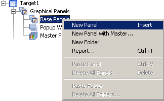
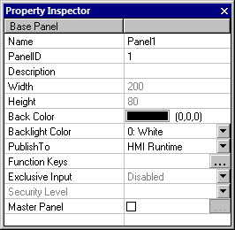

|
|
|
|
|
|
|
|
To create a new panel, use one of the following methods:
In the Navigator window, right-click Base Panels under the Graphical Panels node and select New Panel.

In the Navigator window, right-click the Base Panels and select New Panel with Master.., and then select the master panel you want to use.
Create a new panel by selecting the icon.
In the Property Inspector, define the properties for the new panel.

|
Property |
Description |
|
Name |
The panel name. Whenever a panel is created, a default name is generated. When renaming the panel, its name must be unique within the target, must contain no more than 32 valid characters, and must follow the naming conventions. For details, see Appendix 9, Naming Conventions. |
|
PanelID |
Enter a number between 1 and 8999 for a panel stored in the Graphical Panels node, or a number between 10001 and 18999 for a panel stored in the Popup Window node. You cannot have two panels with the same number for the same target machine. Use the PanelID to change panels from scripts or equipment. |
|
Description |
Enter a description about the panel. You can enter a maximum of 255 characters. |
|
Width |
These fields are read-only. The width and the height of the panel are shown in dots. The width and height is determined by the Panel Size setting for the target machine. For example, if you select SVGA 800 x 600 in the Panel Size field of the target properties, the value is shown in the width (800) and height (600) fields. |
|
Height |
|
|
Back Color |
Select the background color of the panel. |
|
Backlight Color |
The color specified in this property will be the backlight color at runtime when the panel is displayed, depending on the backlight priority. For more information on backlight priority, see Section 16.5.2, Changing the Backlight Color. This property displays for targets that support backlight color. For more information, see Appendix 5, Hardware Specifications. You can also configure a backlight color operation using a switch or action, so that at runtime, you can change the backlight color. For more information, see Section 9.5.21, Backlight Color Operations. |
|
Publish To |
Define the publish settings for the panel. Select whether the panel is published to the target machine (HMI Runtime), Web Gate (Web Gate), or both (All). For more information, see Section 23.2.4.1, Web Gate Publish Settings. |
|
Function Keys |
Click the ellipsis button to open the Panel Function Key dialog box and define the panel function key operations. This property is available only for specific target machines. For a list of target machines that support Function Keys, see Appendix 5, Hardware Specifications. For more information on function keys, see Section 24.5, Function Keys. |
|
Exclusive Input |
Sets the panel to be part of the exclusive input pool. Only one panel out of this pool can display at any time. For more information, see Section 22.2, Setting Up Exclusive Input Relationships. |
|
Security Level |
Sets the Security Level for the Panel. Once a Security Level is defined, only users with the correct security level can access the panel. For more information on security levels, see Section 4.8.2.1, Protecting Panels and Parts from Unauthorized Users. |
|
Master Panel |
If the property does not have an entry yet, click the empty check box to open a list of Master Panels and select one to use. If you do not want to use a Master Panel, click Cancel. If you want to select a different Master Panel, click the ellipsis button.
Changes made to the Master Panel you are using are automatically applied to the base panel.
|